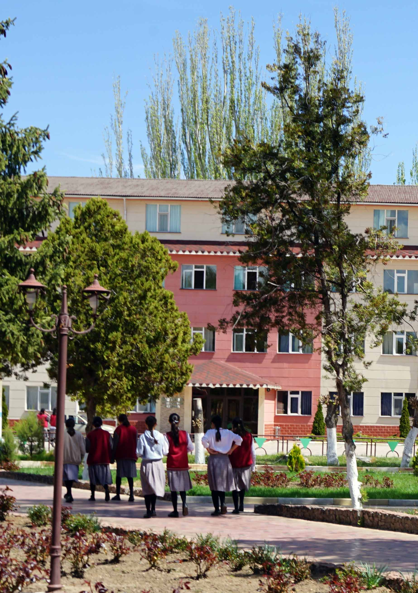

DORMS

DINING HALL

Ziiash Bektenov girl’s high school has the best location for boarding school. Our campus is located in the most beautiful part of our country, near the lake Issyk-Kul. Hence we have fresh air and beautiful nature with the best view. Dormitories are divided into 3 buildings, for each grade. In one room there are 7-8 girls. The dining hall is nearby, and we have 3-time meals with the best menu for growing organisms. The school has 4 floors and is equipped with the latest technology. We also have a canteen where students can get drinks and snacks.